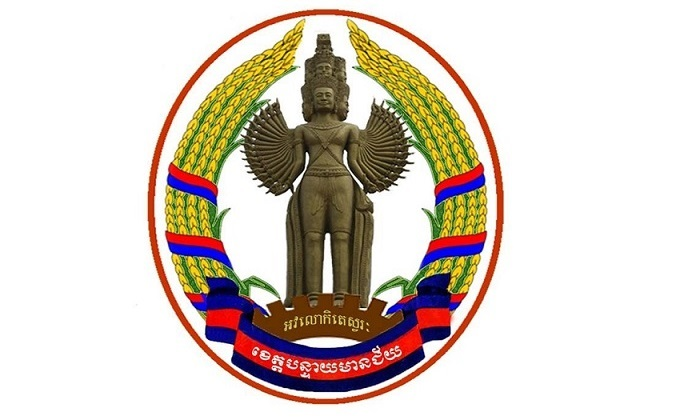
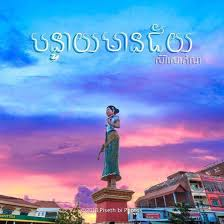
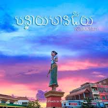
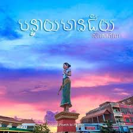
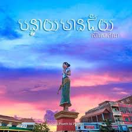

ទីកដីកំណើតរបស់ខ្ញុំ!
លំហាត់ទី២ ⊁ ⊁
.jpg) 

 

Internet គឺជាការភ្ជាប់ ឬ ការធ្វើអោយមានទំនាក់ទំនងគ្នារវាង កុំព្យូទ័រជាច្រើន នៅជុំវិញពិភពលោក ក្នុងគោលបំណង ប្រាស្រ័យទាក់ទងគ្នា ចែកចាយទិន្នន័យ។
ក្នុងឆ្នាំ ១៩៨០, HTML ត្រូវបានបង្កើតឡើងដំបូងដោយ Tim Berners-Lee នៅពេលដែលគាត់ធ្វើការនៅ CERN ។ នៅក្នុងអំឡុងពេលដែលធ្វើការគាត់មានការលំដាក់ក្នុងការស្វែងរកព័ត៌មានដែលស្ថិតនៅក្នុង Computer ផ្សេងៗគ្នា ។ គាត់ក៏មានគំនិតមួយដោយចង់ឲ្យព័ត៌មានទាំងនោះអាចចែករំលែកទៅវិញទៅមករវាងកុំព្យូទ័រ ។ ដោយសារតែគំនិតមួយនេះហើយដែលធ្វើឲ្យកកើតឡើងមូលដ្ឋាននៃភាសា HTML កកើតឡើង ។
ម៉ាស៊ីនបម្រើឬបង្ហោះវិបសាយ (Web Server) គឺជាកម្មវិធីមួយដែលប្រើក្នុងការបង្ហោះឬបម្រើគេហទំព័រដល់អ្នកប្រើប្រា ស់ដើម្បីឆ្លើយតបទៅនឹងសំណើរបស់ពួកគេដែលត្រូវបានបញ្ជូនបន្តដោ យម៉ាស៊ីនកុំព្យូទ័ររបស់ពួកគេតាមរយះ HTTP (កម្មវិធីរុករក) Browser
WWW គឺជាពាក្យ កាត់ របស់ Word Wide Web ហើយអក្សរកាត់នេះជាភាសាកូដមួយដែលប្រើសម្រាប់ដាក់ពីមុខអាសយដ្ឋានតំបន់បណ្តាញដែលអ្នកអាចប្រើវា នៅក្នុងប្រព័ន្ធអ៊ីនធឺណេត ដើម្បីឆ្ពោះទៅរកគេហទំព័រដែលអ្នកចង់បើក ។ URL គឺជាពាក្យកាត់របស់ Uniform Resource Locator ។ ទំព័របណ្តាញដែលគេផ្សព្វផ្សាយនៅលើអ៊ីនធឺណេតសុទ្ធតែមានទីតាំងរៀងខ្លូននិងឈ្មោះខុសៗគ្នាហៅថា URL ។
កម្មវិធីរុករកបណ្ដាញមួយ (សំដៅជាទូទៅថាជាកម្មវិធីរុករក) គឺជាកម្មវិធីមួយសម្រាប់ទាញយក, ការបង្ហាញនិងការធ្វើដំណើរធនធានព័ត៌មានលើវើលវ៉ាយវ៉េប។ ធនធានពត៌មានមួយដែលត្រូវបានកំណត់ដោយគ្រឿងសម្គាល់ធនធានឯកសណ្ឋាន (URI ដែលបាន / URL & ‧) ហើយអាចជាទំព័របណ្តាញ, រូបភាពវីដេអូ, ឬបំណែកផ្សេងទៀតនៃមាតិកា។
Websiteគឺជាបណ្តុំទិន្ន័យនៅក្នុងទំព័រជាច្រើន ដែលត្រូវបានបង្ហាញឲ្យយើងឃើញនូវលើ ប្រព័ន្ធInternetតាមរយះអាសយ័ដ្ឋានរបស់ គេហះនីមួយៗ។រូបរាងរបស់គេហះទំព័រមិន ត្រូវបានគេសន្មតថាមានរូបរាងយ៉ាងណានោះ ទេយ៉ាងហោចណាស់ឲ្យតែបង្ហាញនូវអ្វីមួយនោះគឺបានហើយ។ដោយគេហះទំព័រត្រូវបានគេ បែងចែកជា២គឺ៖ Static Website Dynamic Website. Websiteគឺជាបណ្តុំទិន្ន័យនៅក្នុងទំព័រជាច្រើន ដែលត្រូវបានបង្ហាញឲ្យយើងឃើញនូវលើ ប្រព័ន្ធInternetតាមរយះអាសយ័ដ្ឋានរបស់ គេហះនីមួយៗ។រូបរាងរបស់គេហះទំព័រមិន ត្រូវបានគេសន្មតថាមានរូបរាងយ៉ាងណានោះ ទេយ៉ាងហោចណាស់ឲ្យតែបង្ហាញនូវអ្វីមួយនោះគឺបានហើយ។ដោយគេហះទំព័រត្រូវបានគេ បែងចែកជា២គឺ៖ Static Website Dynamic Website. ហទំព័រ (Homepage/Home page)៖ សំដៅដល់ទំព័រដំបូងដែលគេឃើញនៅពេលបើកមើលអាសយដ្ឋានទំព័រវេប។ ទំព័រវេប (Webpage/Web page)៖ សំដៅលើប្រភព ឬទំព័រព័ត៌មាន (ដូចជាអក្សរ រូបភាព សំឡេង វីដេអូ) នៅលើកុំព្យូទ័រ បណ្ដាញកុំព្យូទ័រ ឬអ៊ីនធឺណិតស្ដីពីប្រធានបទពិសេសណាមួយ និងអាចមើល ឬទិញទំនិញផ្សេងៗតាមរយៈវេប។ ទំព័រវេប (Webpage/Web page)៖ សំដៅលើប្រភព ឬទំព័រព័ត៌មាន (ដូចជាអក្សរ រូបភាព សំឡេង វីដេអូ) នៅលើកុំព្យូទ័រ បណ្ដាញកុំព្យូទ័រ ឬអ៊ីនធឺណិតស្ដីពីប្រធានបទពិសេសណាមួយ និងអាចមើល ឬទិញទំនិញផ្សេងៗតាមរយៈវេប។
Welcomme to Banteay MeanChey
សូមសស្វាគមគ៏ខេត្តបន្ទាយមានជ័យ
ខេត្តបន្ទាយមានជ័យស្រុកកំណាត់របស់របស់ខ្ញុំ
ខេត្តបន្ទាយមានជ័យ ជាខេត្តមួយនៃព្រះរាជាណាចក្រកម្ពុជា ដែលស្ថិតនៅចុងពាយ័ព្យនៃប្រទេស។ ខេត្តនេះមានព្រំប្រទល់ខេត្តជាប់ខេត្តឧត្តរមានជ័យ និង ខេត្តសៀមរាបនៅខាងភាគកើត ខេត្តបាត់ដំបងនៅភាគខាងត្បូង និងមានព្រំដែនរួមអន្តរជាតិជាមួយប្រទេសថៃនៅខាងលិច។ ចំពោះទីរួមខេត្តនិងទីក្រុងធំបង្អស់គឺក្រុងសិរីសោភ័ណ និងក្រុងប៉ោយប៉ែត ហើយខេត្តបន្ទាយមានជ័យក៏ជាខេត្តធំបង្អស់ទី១៣ របស់កម្ពុជាផងដែរ។ +.ប្រវត្តិខេត្តបន្ទាយមានជ័យ បន្ទាយមានជ័យ ជាផ្នែកមួយនៃអាណាចក្រខ្មែរ ដោយសារនៅភាគខាងជើងខេត្តគេឃើញមានប្រាសាទបន្ទាយឆ្មារ ដែលគេជឿថាត្រូវបានសាងឡើងនៅរវាងសតវត្សរ៍ទី១២ និង សតវត្សរ៍ទី១៣។ ប្រាសាទដែលគេស្គាល់តិចតួចជាងគេគឺ ប្រាសាទបន្ទាយនាង និង ប្រាសាទបន្ទាយទ័ព។ នៅសតវត្សរ៍ទី១៧ សៀមបានឈ្លានពានកាន់កាប់ប្រទេសកម្ពុជា ហើយបានប្រែឈ្មោះខេត្តបន្ទាយមានជ័យជាខេត្តស៊ីសុផុន។នៅឆ្នាំ ១៩០៧ សៀមបានប្រគល់ខេត្តនេះទៅបារាំង ដែលក្រោយមកត្រូវបានបញ្ចូលជាដែនដីខេត្តបាត់ដំបងវិញ។ នៅឆ្នាំ១៧៩៥ សៀមបានត្រួតត្រាលើព្រះរាជាណាចក្រកម្ពុជាភាគខាងលិច ហើយបានធ្វើឱ្យតំបន់នោះក្លាយជាខេត្តសៀមនៃកម្ពុជាភាគខាងក្នុង ដែលមានទីរដ្ឋបាលនៅព្រះដំបង ឬខេត្តបាត់ដំបង។ខេត្តនេះបានបន្តក្រោមការត្រួតត្រារបស់សៀមរហូតដល់ឆ្នាំ១៩០៧ នៅពេលនោះសៀមបានជួញប្រែនៅខាងក្នុងកម្ពុជាដើម្បីយកទំនិញត្រឡប់ទៅត្រាច និង ដានជ័យវិញ។ ក្នុងឆ្នាំដដែល ព្រះបាទស៊ីសុវត្ថិបានសំរេចព្រះទ័យបំបែកខេត្តកម្ពុជាភាគខាងក្នុងដែលត្រឡប់មកវិញទៅជាខេត្តបាត់ដំបង ដែលរួមមាន៖សិរីសោភ័ណ និងខេត្តសៀមរាប។នៅគ្រាដែលថៃបានបញ្ចូលកម្ពុជាប៉ែកខាងលិចជាទឹកដីរបស់ខ្លួនឡើងវិញហើយ នៅឆ្នាំ១៩៤១ សិរីសោភ័ណបានបំបែកចេញពីខេត្តបាត់ដំបង និងមានទីរួមខេត្តរដ្ឋបាលនៅខេត្តវិបុលសង្គ្រាមដែលបានបន្តរហូតដល់ឆ្នាំ១៩៤៦ នៅពេលដែលតំបន់នោះទាំងស្រុងបានបង្វែរត្រឡប់មកក្រោមការគ្រប់គ្រងរបស់បារាំង។ នៅចន្លោះពីឆ្នាំ១៩៧០ ដល់ឆ្នាំ១៩៨០ ខេត្តបន្ទាយមានជ័យគឺជាខ្សែត្រៀមជួរមុខក្នុងការប្រយុទ្ធគ្នាជាច្រើន ហើយសង្គ្រាមបានធ្វើឱ្យវាក្លាយជាខេត្តមួយក្នុងចំណោមខេត្តទាំងបីដែលសម្បូរគ្រាប់មីនជាងគេបង្អស់ក្នុងប្រទេសកម្ពុជា រួមជាមួយនឹងនឹងខេត្តប៉ៃលិន និងបាត់ដំបង។ +.ប្រវត្តិឈ្មោះ បន្ទាយមានជ័យ យោងតាមប្រភពពីរដ្ឋបាលខេត្តបន្ទាយមានជ័យ បានឱ្យដឹងថា ឈ្មោះបន្ទាយមានជ័យ មកពីការសម្គាល់បន្ទាយនៃកងទ័ពអំឡុងទសវត្សរ៍ទី៨០ បូកពាក្យមានជ័យ មានន័យថា ឈ្នះឬជោគជ័យ គឺជោគជ័យតាំងពីយុទ្ធនាការរដូវក្តៅឆ្នាំ១៩៨៤ដល់១៩៨៥ ទើបរដ្ឋអំណាចសម័យសាធារណរដ្ឋប្រជាមានិតកម្ពុជា បង្កើតខេត្តបន្ទាយមានជ័យជាខេត្តទី២២ ក្នុងឆ្នាំ១៩៨៧ និងសម្ពោធដំណើរការឆ្នាំ១៩៨៨។ +.ការបង្កើតខេត្ត ភូមិសាស្រ្ត រដ្ឋបាលនិងពលរដ្ឋ ខេត្តបន្ទាយមានជ័យ ត្រូវបង្កើតឡើងដោយអនុក្រឹត្យច្បាប់លេខ៣២ ក្រ.ច ចុះថ្ងៃទី២៣ ខែមករា ឆ្នាំ១៩៨៧ របស់ក្រុមប្រឹក្សារដ្ឋ និងកំណត់ព្រំប្រទល់ខេត្ត ដោយអនុក្រឹត្យលេខ ១០ អនក្រ ចុះថ្ងៃទី៤ ខែមេសា ឆ្នាំ១៩៨៧ របស់ក្រុមប្រឹក្សារដ្ឋមន្ត្រីនៃសាធារណរដ្ឋប្រជាមានិតកម្ពុជា។ ខេត្តនេះ ត្រូវបានប្រកាសឱ្យដំណើរការ ជាផ្លូវការថ្ងៃទី៧ ខែមករា ឆ្នាំ១៩៨៨ ក្រោមអធិបតីលោក ប៊ូ ថង អនុប្រធានក្រុមប្រឹក្សារដ្ឋមន្ត្រី។ខេត្តនេះ ត្រូវបំបែកពីអតីត៥ស្រុកខាងជើងខេត្តបាត់ដំបង មុនឆ្នាំ១៩៨៨ដែលរួមមាន៖ស្រុកមង្គលបុរី ស្រុកថ្មពួក ស្រុកសិរីសោភ័ណ ស្រុកព្រះនេត្រព្រះ និងស្រុកភ្នំស្រុក បូកជាមួយស្រុកបន្ទាយអម្ពិល នៃអតីតខេត្តសៀមរាបនិងឧត្តរមានជ័យ។ ចំពោះភូមិសាស្ត្រនៃការគ្រប់គ្រងរដ្ឋបាល ខេត្តមានផ្ទៃដីសរុប ៦,៦៧៩គីឡូម៉ែត្រក្រឡា។រដ្ឋបាលខេត្តចែកជា២ក្រុងគឺ៖ក្រុងសិរីសោភ័ណនិងក្រុងប៉ោយប៉ែត និង៧ស្រុក គឺ៖ស្រុកមង្គលបូរី ព្រះនេត្រព្រះ ភ្នំស្រុក អូរជ្រៅ ស្វាយចេក ថ្មពួកនិងម៉ាឡៃ។ ចំពោះក្រុងស្រុកទាំង ៩ ចែកចេញជា ១០សង្កាត់ និង ៥៥ឃុំ។ +.ថ្នាក់ដឹកនាំ និងឥស្សរជនជាន់ខ្ពស់ ចាប់ពីបង្កើតខេត្តដល់ពេលបច្ចុប្បន្ន គិតចាប់តាំងពីដំណើរការរដ្ឋបាលខេត្តពីថ្ងៃទី៧ ខែមករា ឆ្នាំ១៩៨៨មក ខេត្តបន្ទាយមានជ័យ មានថ្នាក់ដឹកនាំ ប្រធានគណៈកម្មាធិការប្រជាជន និងអភិបាលខេត្តចំនួន ១១រូបហើយ ដែលរួមមាន៖ ១.លោកអ៊ិត លឿ ៖ ឆ្នាំ១៩៨៨ដល់១៩៩២ ២.លោកម៉ោង កុសល ៖ ឆ្នាំ១៩៩២ដល់១៩៩៤ ៣.លោកដួង ខែម ៖ ឆ្នាំ១៩៩៤ដល់១៩៩៨ ៤.លោកថាច់ ឃន ៖ ឆ្នាំ១៩៩៩ដល់២០០៤ ៥.លោកហេង ចន្ថា ៖ ឆ្នាំ២០០៤ដល់២០០៦ ៦.លោកអន ស៊ុ ៖ ឆ្នាំ២០០៦ដល់២០០៨ ៧.លោកអ៊ុង អឿន ៖ ឆ្នាំ២០០៨ដល់២០១៣ ៨.លោកទ្រី ណារិន ៖ ឆ្នាំ២០១៣ ៩.លោកគោស៊ុំ សារឿត ៖ ឆ្នាំ២០១៣ដល់២០១៦ ១០.លោកសួន បវរ ៖ ឆ្នាំ២០១៦ដល់២០១៩ ១១.លោកអ៊ុំ រាត្រី ៖ ឆ្នាំ២០១៩ដល់បច្ចុប្បន្ន។ +.អត្ថន័យនិងនិមិត្តសញ្ញាខេត្តបន្ទាយមានជ័យ -និមិត្តសញ្ញាមានរាងពងក្រពើ - មានទទឹងស្មើនឹង២ភាគ៣នៃបណ្តោយ -អមសងខាងក្នុងរង្វង់ដោយកួរស្រូវពណ៌លឿងទុំព័ទ្ធជាស្នែងក្របីរុំដោយបូដែលមានពណ៌ក្រហម និងផ្ទៃពណ៌ខៀវ -នៅចំកណ្តាលមានរូបចម្លាក់ព្រះអវលោកិតេស្វរៈដែលមានព្រះហស្ថ៣២ ឈរលើកងចក្រ៧កាំមានចារឹកអក្សរ អវលោកិតេស្វរៈ ពណ៌លឿង -ផ្នែកខាងក្រោមមានបូពណ៌ខៀវលើ និងក្រោម និងចំកណ្តាលផ្ទៃក្រហមមានអក្សរ ខេត្តបន្ទាយមានជ័យ ពណ៌ស -អវលោកិតេស្វរៈ ៖ជាអ្នកធំក្នុងការប្រមើលមើល ឬពិនិត្យសេចក្តីសុខទុក្ខ និងចរិយារបស់សត្វលោក -ព្រះហស្ថ៣២ ៖តំណាងឱ្យការកសាងព្រះបារមីរបស់ព្រះពោធិ៍សាត់ ដើម្បីសម្រេចបាននូវសម្មាសម្ពោធិញ្ញាណ ត្រាស់ដឹងជាព្រះសម្មាសម្ពុទ្ធ -កួស្រូវពណ៌លឿងទុំ ៖តំណាងឱ្យផលិតផលកសិកម្ម ទទួលបានពីការប្រកបមុខរបរផ្អែកលើវិស័យកសិកម្ម ដោយប្រជាពលរដ្ឋខេត្តបន្ទាយមានជ័យចំនួនប្រមាណ ៨៥ភាគរយជាប្រជាកសិករ -កងចក្រមានកាំប្រាំពីរ៖ តំណាងឱ្យរោងចក្រ សហគ្រាសដែលជាសក្តានុពលនាពេលបច្ចុប្បន្ន និងទៅអនាគត កើតមានឡើងក្នុងទឹកដីខេត្តបន្ទាយមានជ័យ ដែលមានផលិតផលកសិកម្មភាគច្រើនកើតឡើងពីដំណាំកសិឧស្សាហកម្មដូចជា៖ដំណាំដំឡូង ពោត សណ្តែក ល្ហុងប្រេង ដើមប្រេងខ្យល់ និងកៅស៊ូ និងលក្ខណៈមួយទៀត គឺជាតំណាងឱ្យថ្ងៃជ័យជម្នះជាប្រវត្តិសាស្រ្តថ្ងៃ៧ មករា ១៩៧៩៕
សុភាសិតខ្មែរមានពាក្យចាស់ពោលថា គោបាត់បានធ្វើ របង ដល់ពេលប្រឡងទើបខំរៀនភាសិតមានន័យថា ជាពាក្យដែលគេបានសរសេរ ឬនិយាយជាឃ្លា ឬជាល្បះខ្លីៗ អំពីចរិយារបស់មនុស្ស សភាវៈរបស់សត្វ និងសភាពពិតរបស់ធម្មជាតិប្រកបដោយវាចារពិរោះជាប់ចិត្ត និងបង្កប់អត្ថន័យខ្លឹមសារដ៏ជ្រាលជ្រៅ ខាងការអប់រំដល់មហាជនឲ្យលោកអនុវត្តតាម ឬជៀសវាងឲ្យឆ្ងាយ ឬក៏បានជាការពិចារណា។ សុភាសិតខ្មែរ ជាឃ្លាខ្លីៗ តែមានអត្ថន័យជ្រៅជ្រះ ជាឱវាទល្អៗដែលមានប្រយោជន៍គួររៀនគួរស្តាប់។ ក្រអ្វីក្រចុះ កុំឲ្យតែក្រគំនិត។ ក្រមុំដណ្ដឹងម្ដាយ មេម៉ាយដណ្ដឹងចិត្ត។ ក្រពើវង្វេងបឹង។ កាត់ទឹកមិនដាច់ កាត់សាច់វាឈឺ។ កាប់បំពង់ រង់ចាំទឹកភ្លៀង។ ការប៉ុនភ្នំមិនគិត ទៅគិតឯស្គរបែកមាត់។ ការលំបាកត្រូវគិតឲ្យធូរ ការយូរត្រូវគិតឲ្យឆាប់។ ការយល់ដឹងតែមួយដង អាចធ្វើឲ្យជីវិតទាំងមូលមានន័យ។ ការធ្វើវិនិយោគចំណេះដឹងតែងនាំមកនូវផលប្រយោជន៍ដ៏ប្រសើរបំផុត។ កោកៗសឹកតែមាត់ ត្រដោកឆ្អែតតែពោះក្របី។ កោរមិនដាក់ទឹក។ ក្តៅថ្ងៃមិនស្មើក្ដៅចិត្ត។ ក្តៅស៊ីរាក់ ត្រជាក់ស៊ីជ្រៅ។ កំភ្លាញស្លាប់ព្រោះមាត់ ខ្វែកស្លាប់ព្រោះអាចម៍។ កំហុសរមែងមានដល់អ្នកធ្វើ អ្នកនៅឥតអំពើបានអ្វីនឹងខុស។ កុំខ្វើកតាមខ្យល់ កុំខ្វល់តាមរលក។ កុំគូរមុនគិត។ កុំជិះចង្អេរលើកខ្លួនឯង ក្បាលទូលកញ្ច្រែងកុំក្អេងក្អាង កុំដេកទទូរចាំសំណាង កុំអាងព្រះប្រោសត្រូវតែប្រឹង។ កុំឈ្លោះនឹងស្រី កុំក្ដីនឹងគ្នាឯង។ កុំដេកផ្សងព្រេង កុំវង្វេងខុសផ្លូវ។ កុំដេកចាំស្លាប់ អង្គុយចាំមាន ខ្មាសល្ងង់ទើបចេះ ខ្មាសក្រទើបមាន ដឹងខ្លួនថាល្ងង់ គង់បានជាប្រាជ្ញ កុំស្លាប់មុនរស់ រស់ហើយសឹមស្លាប់ ចូរសេពអ្នកប្រាជ្ញ កុំត្រាប់មនុស្សពាល។ (ព្រះគ្រូធម្មបណ្ឌិត គង់ ស៊ឹម) កុំដាំស្រូវនៅផ្លូវដំរី។ កុំទុកចិត្តមេឃ កុំទុកចិត្តផ្កាយ កុំទុកចិត្តប្រពន្ធថាគ្មានសាហាយ កុំទុកចិត្តម្ដាយថាគ្មានបំណុល។ កុំទុំមុនស្រគាល។ កុំផ្ទុកតាមទូកថ្វែ។ កុំពត់ស្រឡៅ កុំប្រដៅស្រីខូច។ កុំពាក់មុខយក្ស កុំពាក់ស្បែកខ្លា។ កុំពូតផ្សែងជាដុំ កុំយកភ្នំទ្រាប់អង្គុយ។ កុំយកស្រឡៅធ្វើខ្នួច កុំសម្រួចឈើពុក។ កុំរាមុខដឹង កុំទទឹងមុខសឹក។ កុំរៀននៅទំនេរខាតការកម្ម កុំរៀនបណ្តាក់ចាំជាពេលក្រោយ កុំរៀនប្រហែសមើលងាយនាំធ្លោយ កុំរៀនមិនអោយទានស្មូមយាចក។ កុំអាងថា បើមានមិនបាច់ខំ បើរលំមិនបាច់ច្រាន។ កុំអោយប្រព្រឹត្តទុច្ចរិត ដោយការគប់មិត្រលបចងពន្ធ លួចលាក់មានស្រីសហាយស្មន់ ក្បត់ចិត្តប្រពន្ធអោយមួរហ្មង។ គេខុសកុំអាលអរ គេសាទរកុំអាលអួត។ គិតមុនគូ គ្មានកម្លាំង គ្មានបញ្ញា គ្មានអាហារ គ្មានជិវិត។ គ្មានពូជ គ្មានកំណើត គ្នាតិចអន្សមខ្លោច គ្នាដូចស្រមោចអន្សមឆៅ។ គុកនិងសោ គឺចោរបង្កើតឱសថល្អឆើតកើតពីរោគ ដំណកកើតពីការងុយងោក មនុស្សក្នុងលោកកើតពីកម្ម។ គ្រូកាច សិស្សខូច។ គ្រូទាយ ម្តាយថា។ គួរគិតជីវិតពុំទៀងទាត់ តែងតែបែរបត់កាន់ក្តីស្លាប់ ពុំដែលបានស្រួលប្រែប្រួលឆាប់ ក្រឡាប់ស្ងាត់សូន្យចា គោដំបៅខ្នង ក្អែកហើររំលង រំសាយកន្ទុយ។ ឃាត់កំហឹងដោយប្រឹងអត់អោយបាន ឃាត់ពាលសាមាន្យដោយអាជ្ញាបុគ្គល ឃាត់ចិត្តចាកទោសា ប្រសើរថ្លៃថ្លាក្នុងលោកិយ។ ឃាត់ចិត្តចាកក្តីស្នេហា ក្នុងកាមតណ្ហានាលោកិយ ដូចយកអំបោះចងដំរី ពិបាកពេកក្រៃគួរវៀរមុន។ ឃ្លាតកាយ ណាយចិត្ត។ ឃ្លានឆ្ងាញ់ ស្រលាញ់ល្អ។ ឃុបឃិតជនពាល រាលទុក្ខដល់ខ្លួន។ ឃុបឃិតបណ្ឌិត សុខមួយជិវិតឥតទុក្ខា។ ឃើញខ្លាដេកថាខ្លាស្លាប់ ឃើញខ្លាក្រាបថាខ្លាសំពះ។ ឃើញគេទៅកុំអោយខាន ឃើញគេបានកុំអោយទៅ។ ឃើញឈើពុក កុំអាលដាក់គូទអង្គុយ (ឬ កុំអាលដាក់គូទលើ)។ ឃើញដំរីជុះ កុំជុះតាមដំរី (ឬ ដំរីជុះ កុំជុះតាមដំរី)។ ឃើញថ្លុកថាជាថ្នល់ ក្រែងកំហល់កំហុសមាន។ ឃើញពីនាយកុំអាលទាយអាក្រក់ល្អ លុះឃើញជាក់ជាខ្មៅស ទើបថាបាន បើបណ្តោយតាមគំនិតដែលគិតស្មាន នឹងរំខានព្រោះការខុសកំហុសខ្លួន។ ឃើញសម្បកថាខ្លឹមរុក្ខា យល់ពួកបច្ចាថាជាមិត្រ ពាលប្រឡំថាបណ្ឌិត ច្រឡំលាមកពិតថាបុប្ផា។ ឃ្លានកុំអាលស៊ី ងងុយកុំអាលដេក យប់កុំអាលនិយាយជាមួយស្រី។ ឃ្លានក្រៃណាឆ្ងាញ់ ស្រឡាញ់ក្រៃណាល្អ (ឬ ពិសាក្រៃណានឹងឃ្លាន អាក្រក់ប៉ុន្មានក្រៃណានឹងចិត្ត)។ ឃ្លោកលិច អម្បែងអណ្តែត។ ឃ្វាលក្របីជិះក្របី ឃ្វាលគោជិះគោ។ ឃ្វាលចិត្តលំបាកពេកពិត ដូចឃ្វាលពពក។ ឃ្វាលគោក្របីដោយអាជ្ញា ឃ្វាលចិត្តល្អជាដោយអំណត់។ ឃ្វាលចិត្តឥតកំណាញ់ ដោយលះបង់កុំប្រណី។ ឃ្វាលនគរដោយពលរដ្ឋប្រុសស្រី រួមសាមគ្គីតាមរដ្ឋបុរសជាតិ។ ងប់នឹងកូនប្រពន្ធទ្រព្យ ព្រះថាអភ័ព្វព្រោះជាប់ចំណង។ ងប់នឹងញាតិ ឃ្លាតច្បាប់។ ងប់នឹងមាសប្រាក់ ខូចយសសក្តា។ ងប់នឹងប្រុស ខូចព្រហ្មចារី។ ងប់នឹងប្រុស ខូចឈ្មោះមួយជាតិ។ ងប់នឹងស្រី ចំណីទុក្ខ។ ងប់នឹងល្បែង តែងហិនហោច។ ងប់នឹងល្បែង តែងវិនាស។ ងប់នឹងស្រា ខូចស្មារតី។ ងប់នឹងពាក្យសរសើរ គេថាភ្លើ។ ងប់នឹងពាក្យបង្អាប់ ស្លាប់គំនិត។ ងប់នឹងស័ក្តិយស ស្អុយទាំងអស់ក្នុងលោកិយ។ ងប់នឹងជំនឿ រឿគំនិត។ ងាប់ដើម្បីជាតិមាតុភូមិ ទេវតាឥន្ទ្រព្រហ្មចោមឲ្យពរ។ ងាប់ខ្លួន សមសួនជាងងាប់កេរ្តិ៍ឈ្មោះ។ ងាប់គំនិត ងងឹតដល់ស្លាប់។ ងាប់ទាំងរស់ ស្អុយទាំងស្រស់។ ងាប់ដៃជើង ថ្កើងជាងងាប់ពាក្យសម្តី។ ងាប់នឹងស្រី ចង្រៃមួយជាតិ។ ងាប់នឹងសំដី ដូចត្រីកំភ្លាញ។ ងាប់នឹងអាចម៍ឯង ជាក់ស្តែងដូចខ្វែក។ ងាប់ព្រោះគំនិត ដូចកាំបិតចិតដងឯង។ ងាប់ជាតិ ព្រោះឃ្លាតសាមគ្គី។ ងាប់នយោបាយ ព្រោះស្តាយលាភ។ ងាប់ស្តួក ដូចឃ្លោកទុំ។ ងាយមិនក្រៃណានឹងបាន មានមិនក្រៃណានឹងអ្នកបានសុខ ចេះក្តីមិនក្រៃណានឹងម្ចាស់ស្រុក។ ងើយ (ឬ ងើប) ស្កក ឱនដាក់គ្រាប់។ ចង់ធំខំពីតូច បើខ្លាចខួចកុំឆាប់ខឹង ការអ្វីឲ្យចេះថ្លឹង កុំប្រឹងជុះតាមដំរី ។ ចង់ប្រាជ្ញឲ្យខំប្រឹង ចងក្បិនតឹងរកស៊ីធូរ គំនិតមុនគំនូរ រៀនធ្វើគ្រូមានគេរាប់ ។ ចង់ឲ្យមានជួញអង្ករចង់ឲ្យក្រជួញឡាន។ ចង់ចេះឲ្យធ្វើល្ងង់។ ចង់ស្រួចដូចបន្លា ត្រូវឧស្សាហ៍ដុសដែកដុល។ ច្របាច់កចិន លៀនអណ្តាតខែ្មរ។ ចម្ងល់គឺជាបិតានៃការចៃ្នប្រឌិត។ ចម្ងល់គឺជាការចាប់ផ្តើមមិនមែនជាចុងបញ្ចប់នៃបញ្ញាទេ។ ចង្អៀតផ្ទះនៅបាន ចង្អៀតចិត្តនៅពុំបាន។ ចាក់អង្ករយកអង្កាម។ ចានមួយរាវ លែងអីរណ្តំគ្នា។ ចាញ់ចត្រង្គអស់ប្រាជ្ញា ចាញ់តណ្ហាអស់កុសល។ ចាញ់បានជាព្រះ ឈ្នះបានជាមារ។ ចាប់ក្ដាមដាក់ចង្អេរ។ ចាប់នេះចាប់នោះ មិនឆ្ពោះត្រង់ណា។ ចាប់ច្រវាក្រាក សំឡឹងជ្រោយ។ ចាប់ត្រីបាន កុំឲ្យល្អក់ទឹក។ ចាប់ត្រីដៃពីរតម្រាហាម ចាក់អង្ករយកអង្កាមហាមមិនឈ្នះ អុំទូកឡើងភ្នំខំមានៈ បង់ព្រះទៅសំពះឯបាយាប (អារក្ស)។ ចាប់វល្លិមួយ រញ្ជួយរាល់ដើម។ ចាស់អាងស្លាប់ ពាលអាងកាប់ កេ្មងអាងយំ។ ចិត្តដាច់នៅស្រី ។ ចិត្តល្អ ក្រខ្លួន។ ចិត្តល្អ ក្រមិនយូរ។ ចិត្តជាទេវវត្ត មាត់ជាទេវតា។ ចិញ្ចឹមកូនខ្លា វាសងគុណ។ ចិញ្ចឹមមនុស្សខូច ដូចចិញ្ចឹមខ្លា។ ចូលព្រៃសត្វសាហាវ រកអំពាវគ្នាមកជុំ ដល់បានស្ករនិងទឹកឃ្មុំ ពួនសម្ងំឆីម្នាក់ឯង ។ ចូលព្រៃទាន់ព្រឹក ចង់សឹកទាន់ក្មេង។ ចូលស្ទឹងតាមបទ ចូលស្រុកតាមប្រទេស។ ចូរមើលកាលវែង កុំមើលកាលខ្លី។ ចូរសេពអ្នកប្រាជ្ញ កុំត្រាប់មនុស្សពាល។ ចេះច្បាប់មិនខ្លាចក្ដី ចេះវិន័យមិនខ្លាចសង្ឃ ។ ចេះដប់មិនស្មើប្រសប់មួយ។ ចេះឯង ឲ្យក្រែងចេះគេ។ ចេះមិនដែលចាញ់ ។ ចេះពីរៀន មានពីរក ក្រពីខ្ជិល។ ចេះមកពីរៀន មានមកពីរក។ ចោលសាច់ស្រវ៉ាឆ្អឹង ទំពារទៅរឹងរាវរកសាច់ ។ ចំណេះបានពីរៀន មានបានមកពីរក។ ចំណេះជិះកឯង ។ ចំណេះវិជ្ជាលោកចែងចាត់ ទុកជាសម្បត្តិសម្បូរបាន ទោះបីក្រខ្សត់អត់ប៉ុន្មាន គង់តែបានគ្រាន់អាស្រ័យ ។ ចំណីឆ្ងាញ់កុំទុកចាំស្អែក ប្រពន្ធគាប់ភ្នែកកុំឲ្យដើរក្រោយ ។ ចំណីច្រើនមុខច្រើនពិសា កូនច្រើនបាច្រើនល្អ ។ ចុះទឹកក្រពើ ឡើងលើខ្លា។ ឆ្មាមិននៅ កណ្តុរឡើងរាជ្យ។ ឆ្ងាយកាយ ណាយចិត្ត។ ឆ្ងាញ់មាត់មិនស្អិត ដូចចិត្តឆ្ងាញ់។ ឆ្អិនគំនិតពិតជាឆ្អិនគ្រប់យ៉ាងឆ្អិន ព្រេងសំណាងផុតទុក្ខា។ ឆ្អិនក្បាលស៊ីក្បាល ឆ្អិនកន្ទុយស៊ីកន្ទុយ។ ឆែ្កខាំឲ្យរកម្ចាស់ គោឆ្កឹះឲ្យរកនាយ។ ឆ្កែខាំកុំខាំឆ្កែវិញ។ ឆែ្កទាល់ច្រក រលកទាល់ច្រាំង។ ឆែ្កព្រូសមិនដែលខាំ ផ្គរលាន់រអាំមិនដែលភ្លៀង។ ឆ្កែខាំឲ្យរកម្ចាស់ គោឆ្កឹះឲ្យរកនាយ ។ ឆ្នាំងណាគ្របនឹង។ ឆ្លុះកញ្ចក់ ធេ្មចនេត្រា។ ជក់នឹងលែ្បង តែងវិនាស។ ជាការងាយក្នុងការធើ្វការងារមួយបានល្អ ជាងពន្យល់គេពីរបៀបធ្វើការងារនោះ។ ជាតិទាពូជទាប ចង់នៅទីរាប មិនចង់ឡើងធ្នើរ។ ជាតិជាអ្នកជា ស្ងាត់ស្ងៀមកិរិយា មិនចេញក្អេងក្អាង ឯសន្តានពាលចេញឫកអាងយ៉ាង ភ្លាត់ស្នៀតស្រទាង ព្រោះព្រុយមិនឈប់ ។ ជាងទងស៊ីរងកំបែក ជាងដែកស៊ីហែកនឹងដៃ។ ជាងមិនកើតបន្ទោសដែក។ ជ្រងោប៉ុនគល់ មិនយល់ប៉ុនសក់។ ជ្រាយរអៀច ដូចបបរឈ្មោល។ ជ្រូកស្លាប់ ព្រោះសាច់។ ជួញខាតកុំឈប់ខាន បើចង់បានកុំខ្លាចបង់។ ជំពប់ជើងគង់បាក់ ជំពប់មាត់បង់ប្រាក់។ ជ្រះថ្លាតែមាត់ ចិត្តស្មូរជន។ ជិះក្របីចម្លងភក់ ស្រណុកជាជាងហែល។ ឈើវៀចធ្វើកង់ឈើត្រង់ធ្វើទូក ឈឺធ្ងន់យកដំរីទៅបន់ ដល់ជំងឺស្រន់យកពងមាន់ទៅថ្វាយ។ ឈឺជើងធាត់ ឈឺមាត់ស្គម។ ឈើពុក កុំដាក់គូថអង្គុយ។ ឈើកោងវល្លិព័ទ្ធ មនុស្សខ្ចាត់ព្រាត់កុំយកខ្លួនបៀត។ ឈ្នះអ្នកខ្ពស់ដោយបន្ទន់ប្រាណ ឈ្នះអ្នកក្លាហានដោយទំលាយ ឈ្នះអ្នកខ្សោយដោយសម្លបាយ ឈ្នះអ្នកស្មើកាយដោយការព្យាយាម ។ ឈ្មោះខ្លួនបែបណា ខំធ្វើការឲ្យដូចឈ្មោះ។ ឈ្លោះនឹងស្រីនាំឲ្យហិន ក្តីនឹងចិននាំឲ្យថោក។ ញញឹមស្មើ សើចស្ទើរ សំដីពីរោះ ការណ៍ទាំងនោះចូរប្រយ័ត្ន ។ ញ៉ាមដូចក្តាម ស៊ីអាចម៍។ ញាតិផ្ទាល់ បើមិនស្គាល់គឺអ្នកដទៃ។ ញាតិនិងមិត្រ បើញាតិមិនគិត មិត្រប្រសើរជាង។ ញៀននឹងស្រីចំណីទុក្ខ។ ញៀននឹងលែ្បងតែងហិនហោច។ ញៀននឹងបៀប៉ោ អស់ខោអស់អាវ។ ញៀននឹងបៀ គឃៀរស្លៀកពាង។ ញៀននឹងលាភ ថោកទាបដូចសត្វ។ ញៀននឹងស្រា ដេកផ្ងាក្នុងផ្លូវ។ ញៀននឹងលែ្បងតែងបង់យស។ ដាវមុតៗមែនក្នុងស្រោម វិជ្ជាចេះព្រមនៅក្នុងក្បួន ប្រពន្ធគាប់ចិត្តនៅឆ្ងាយខ្លួន ដល់ជូនត្រូវការរអារចិត្ត ។ ដល់ត្រើយ សើយគូថ។ ដង្កូវចេញពីសាច់ ច្រែះចេញពីដែក។ ដាក់ទុកកូនចៅ ឲ្យមើលផៅសន្តាន។ ដឹកគោញី បន្សីគោលឈ្មោល។ ដឹងឆ្លើយព្រោះដង កូនឆ្គងព្រោះមេបា។ ដឹងរង្គោះ បោះបណ្តោយ។ ដឹងថាខ្លួនល្ងង់ គង់បានជាប្រាជ្ញ។ ដឹងបាំងតាមសាប់ ច្បាប់កាត់តាមពាក្យ។ ដុតឲ្យខ្លោច រោចឲ្យឆៅ។ ដូចដេកផ្ងាស្តោះដាក់ទ្រូងឯង។ ដូច(ជាគេ)អូសឆែ្កឲ្យចុះទឹក។ ដូចខ្វៀនកន្ទុយឆែ្ក ទោះនៅប្រែពត់ពុំត្រង់។ ដូចក្រពើ វងេ្វងបឹង។ ដួលត្មោល ដូចគ្មានអីទប់។ ដួលមិនបាច់ច្រាន បានមិនបាច់ខំ។ ដើមនៅឯស្រែ ផែ្លនៅឯផ្សារ។ ដើរដោយផ្លូវគន្លង តម្រាយអ្នកចាស់បុរាណ។ ដើរឲ្យរំពៃ អង្គុយឲ្យរំពឹង។ ដើរឲ្យមានបី ស្រដីឲ្យមានបួន។ ដើម្បីធើ្វរឿងធំមួយត្រូវគិតជាមុនសិនចាំធ្វើជាក្រោយ។ ដេកយប់កុំដេកយូរ ខ្លាចក្តីទុជ៌នដល់ប្រាណ។ ដេកមិនលក់កុំខំដេក។ ដេកដល់ថៃ្ង នាំចង្រៃខ្លួន។ ដេកផ្ងាស្តោះលើទ្រូងឯង។ ដេកលើភ្លៅ ទៅបៅដោះអ្នកដទៃ។ ដេកយប់ កុំនិយាយនឹងស្រី។ ដេកទាល់ថៃ្ង យកកំជិលដែលគេ។ ដេកមិនលក់ បក់មិនល្អើយ។ ដេកផ្សំដួល រមួលផ្សំគ្រេច។ ដេញទាន់កុំជាន់កែង។ ដៃតូច ខ្លួនទាប ចង់ឈោងចាប់ផ្កាយ។ ដៃភ្លើងជើងមាន់។ ដាំដូងឲ្យខំថែ ចង់ស៊ីផែ្លឲ្យដុតគល់។ ដាំជើងក្រាន មិនប្រមាណឆ្នាំង។ ដំរីខ្វាក់ ទ្រមាក់ឆ្កួត។ ដំរីជល់គ្នា ងាប់ស្មៅចិញ្ចៀន។ ដំរីសាស្លាប់ យកចង្អេរបាំង។ ដំបៅមិនឈឺ យកឈើទៅចាក់។ ដោះស្រាយប្រស្នា ថ្កើងអ្នកប្រាជ្ញ។ ដោះកនែ្ទក អារឹសកូន។ ណាយកាយ ឆ្ងាយចិត្ត។ ណែនាំខុសផ្លូវ តែងទៅអបាយមុខ។ ណែនាំកូន ត្រូវប្រដៅខ្លួនទុកជាគំរូ។ តសំពៅ មិនត្រូវស្តាយដែក។ តវាសនា ឲ្យខំសន្សំបុណ្យ។ តដងរែក ឲ្យល្មមនឹងស្មា។ តកម្លាំងឲ្យសេពអាហារ។ តក់ៗពេញបំពង់ ឆុងៗកំពប់អស់ ។ តមមេស៊ីពង ស៊ីរងសម្បុក។ ត្រង់មិនឈ្នះទាល់។ ត្រីឆ្តោរស៊ីកូនឯង។ ត្រីងៀត ឆ្លៀតពង ត្រីជាប់ក្នុងមង ឆ្លៀតពន្លាក ។ ត្រីមួយត្រកតែស្អុយមួយ ស្អុយទាំងអស់។ ត្រុកៗអ្នកស្រុកមើលងាយ រលាស់គូថខ្ចាយមានឱតមានភាន់ ។ តឹងគិតឲ្យធូរ យូរគិតឲ្យឆាប់។ តឹងព្អឹះដូចអូសឫស្សីច្រាសចុង។ ត្រឹកៗដល់ផ្ទះ តូងតាងដេកផ្លូវ។ ត្រកូលសជាតិ មាយាទសពូជ។ ត្រួសត្រាយទុក ស្រណុកជាងកែកុន។ ត្រូវសន្សំទ្រព្យ តិចៗត្រឡប់ ចំរើនធាត់ធំ។ ថយយស ព្រោះព្រហើន។ ថិតថេរតែខ្លួន ចិត្តផ្ទួនតែទុក្ខ។ តក់ៗពេញបំពុងឆុងៗកន្លះក្រហែត ថោកអីនៅដៃថៃ្លអីនៅមាត់។ ទាហានថ្កើងដ្បិតសឹក ធ្វើស្រែដ្បិតទឹក ត្រឹកពលព្រោះបាយ សិស្សប្រាជ្ញដ្បិតគ្រូ ជេរពោលដំវាយ ពលថ្កើងដ្បិតនាយហ្វឹកហ្វឺនខះខំ ។ ទម្ពក់វាទៅ ទើបព្នៅវាមក។ ទ្រព្យច្រើនព្រួយរក្សា ទ្រព្យតិចណាព្រួយរិះរក។ ទ្រព្យធនទោះថោកថៃ្ល រួមរក្សាកុំបីធ្លោយ។ ទនេ្លដប់ មិនស្កប់សមុទ្រមួយ។ ទឹកថ្លាល្គឹកបើល្អក់ ដ្បិតរលកបោកសោះសា។ ទឹកជន់ បុណ្យសេ្តច ។ ទឹករាក់ត្រឹមភ្លៅ ទឹកជ្រៅ ត្រឹមជង្គង់។ ទឹកត្រជាក់ត្រីកុម ទឹកក្តៅត្រីរត់ចេញ។ ទឹកបាក់ទៅទាប ដីខ្ពស់កណ្តៀរពូន។ ទឹកហូរមិនដែលហត់ ព្រះពុទ្ធមិនដែលខឹង។ ទឹកហូរមិនដែលហត់ ប្រុសស្បថកុំឲ្យជឿ។ ទឹកថ្លាលាងសក់ ទឹកល្អក់លាងជើង។ ទុកចោលវាចាស់ ប្រើណាស់វាថ្មី។ ទូកទៅ កំពង់នៅ។ ទូកយើងវែង ទូកគេខ្លីតាមគេមេ្តចទាន់។ ទូកដាច់យកទូកតាម។ ទូកបែកជាទូកគត់ ទូកកំបុតជាទូកកង។ ទាំងអ្នកមាននិងអ្នកក្រគឺជាកូនចៅនៃគំនិត។ ទៅឥតគេរក មកឥតគេហៅ។ ធ្ងន់នៅថ្ម ក្រនៅក្តី។ ធ្វើគុណបានទោស ដូចប្រោះខ្លាស្លាប់។ ធ្វើស្រែទាន់ក្តៅដី ចង់ស្រីទាន់ក្តៅចិត្ត។ ធ្វើស្រែនឹងទឹក ធ្វើសឹកនឹងបាយ។ ធ្វើស្រែឲ្យមើលស្មៅ ទុកដាក់កូនចៅឲ្យមើលផៅសន្ដាន។ ធ្វើល្អបានល្អ ធ្វើអាក្រក់បានអាក្រក់។ ធ្វើចេះត្រូវគេប្រើ ធ្វើល្ងីល្ងើស្រណុកខ្លួន។ ធ្វើការតិចចាយច្រើនចម្រើនក្រ។ ធ្វើគុណ ១០០ សំពៅ ទោស ១ ចូលទៅ រលាយគុណអស់។ ធុងទទេឮខ្លាំងណាស់។ ធ្នូស្នាបង់បាញ់ ធម៌បង់ទន្ទេញ ស្រ្ដីបង់ភស្ដា របាំបង់លេងវង្វេងតម្រាចាត់ក្នុងមលាមន្ទិលសៅហ្មង។ ធំតែខ្លួន ដូចឃ្លោក។ នំមិនធំជាងនាឡិ។ នឿយមុន ស្រណុកក្រោយ។ នារីមានប្តីពីរបីដង ភិក្ខុផងនៅវត្តពីរបីវ៉ា បក្សីជាប់ជង់ពីរបីគ្រា មាយាពួកនេះធ្វើច្រើនក្រៃ ។ និយាយបាតដៃជាខ្នងដៃ។ និយាយច្រើនគេមិនស្តាប់ អាប់ប្រាជ្ញា។ និយាយបែកជាអូរ ហូរជាស្ទឹង។ និយាយយប់ផ្ទប់ព្រៃ និយាយថៃ្ងព្រៃមានត្រចៀក។ និរាសកុំមេ្ញញ ខឹងកុំទនេ្ទញ ស្អប់កុំព្យាបាទ។ នឹងលេបវាស្លាក់ នឹងខ្ជាក់វាសែ្លង។ នឹងឆីចង់ពិសា ខ្ជិលទំពាឲ្យម៉ដ្ឋហ្មង។ នឿយណាយកុំដេក យកប្រពន្ធឲ្យមើលម្តាយកេ្មក ចូលដំណេកកុំនិយាយនឹងប្រពន្ធ។ នៅផ្ទះម្តាយទីទៃ នៅព្រៃម្តាយតែមួយ។ នៅពេលដែលបុគ្គលម្នាក់មានចរិតមិនច្បាស់លាស់ចំពោះអ្នក ត្រូវរកមិត្តផេ្សង។ បន់ព្រះទៅសំពះឯបាយាប។ បង់បោយមិនមើលប្រាណ ដាំជើងក្រានមិនប្រមាណឆ្នាំង។ បន់ព្រះ សំពះទេព្តា។ បណ្ឌិតមានការមិនរករឿងជាកម្លាំង។ បណ្ឌិតស្ងៀមស្ងាត់ ចាំស្តាប់គ្រប់ម៉ាត់ អ្នកពោលប្រាស្រ័យ ប្រើស្មារតីគិតគំនិតកែខៃ ឲ្យបានជោគជ័យ ជាងពោលប៉ប៉ាច់ ។ បញ្ញើទុក ស្មើបំណុល។ ប្រពន្ធពីរ គោបី ដំរីមួយ នាំឲ្យព្រួយចិត្ត។ ប្រហែសបាត់ ប្រយ័ត្នគង់។ ប្រមាថម្តាយ រំលាយព្រះ។ ប្រមាថព្រៀងលាន តែងមានក្តីទុក្ខ។ ប្រមាថចាស់ អាយុខ្លី។ ប្រមាត់ដី អួតចង់ឡើងទ្រើង។ ប្រញាប់ពេកដេកផ្លួវ។ បាតដៃជាខ្នងដៃ។ បានតែបាប មិនឆ្អាបមាត់។ បានពីកែ្អក ចែកទៅតាវ៉ៅ។ បានមាស ក្រអីនឹងក្រដាស់ខ្ចប់។ បាបកម្មកុំបីមាន សីលនិងទានឲ្យរិះគិត។ បា្រក់ក៏បង់ ថង់ក៏ដាច់។ ប្រាជ្ញាបុណ្យផងកើតដោយប្រតិបត្តិ។ ប្រះដេកឆាប់លក់ ត្បិតឥតបើគិត។ បុណ្យបាត់ដ្បិតបាប លាបបាត់ដ្បិតឃោរ។ បុណ្យក៏ធ្វើ ឈើក៏កាប់។ បុរសទុកដូចមាស ស្រីទុកដូចទង់ដែង។ បួសដោយវត្ត ចិត្តដោយខ្លួន។ បំណាច់នឹងបាប ឲ្យឆ្អាបមាត់។ បើត្រាប់ឯតាំងយូ ក្រឯគ្រូពុំគួរត្រាប់។ បើនឹងរស់ឲ្យគាប់ បើនឹងងាប់ឲ្យគួរ។ បើមិនជួយចូកជួយចែវ កុំយកជើងរាទឹក។ បើប្រឹងនឹងស្រួច បាច់អីសម្រួចដូចបន្លា។ បើឆីកុំតាមឃ្លាន មើលប្រមាណគ្រប់គ្នីគ្នា។ បើកាចៗឲ្យគេកោត បើឆោតៗឲ្យគេអាណិត។ បើក្រទ្រព្យក៏ក្រចុះ កុំឲ្យតែទាល់គំនិត។ បើខឹងឲ្យខំអត់ បើខ្សត់ឲ្យខំរក។ បើត្រាប់សត្វក្ងោក កុំបីត្រាប់ពុតទន្សាយ។ បើមិត្តមិនល្អ កុំយកជាមិត្ត។ បើឮសូរផ្គរ កុំអាលចាក់ទឹកចោល។ បើស្តីឲ្យពិនិត្យ ពាក្យណាពិតសឹងចរចា។ បើកក្តោងទាន់ត្រូវខ្យល់។ ផឹកស្រាក្លាសំដី។ ផ្ទុករទេះតាមចំណុះ។ ផែ្លឈើមិនដែលជ្រុះឆ្ងាយពីគល់។ ផ្លស់យស ព្រោះប្រមាថ។ ផ្លូវវៀចកុំបោះបង់ ផ្លូវណាត្រង់កុំដើរហោង ដើរដោយផ្លូវគន្លង តម្រាយចាស់បុរាណ ។ ផ្ទះធំស្រណុក ដ្បិតភរិយាជា។ ផ្ទះបាក់បែក ឆាប់ទល់ទ្រ។ ផោមក្នុងទឹកមេ្តចគង់ស្អុយ។ ពងមាន់កុំផ្ញើនឹងកែ្អក។ ពាក្យគ្រូរែងរឹង ស្រារែងស្រវឹង ពុំដែលពិសា។ ពាក្យអប្រិយចាញ់អាត្មា។ ពាក្យច្រើនភូត ចាញ់អាត្មា។ ពាក្យសែ្លងកុំស្អប់ ពាក្យគាប់ឲ្យយក។ ពាក្យម្តាយ ទំនាយគ្រូ។ ពិបាកត្រូវគិតឲ្យធូរ យូរត្រូវគិតឲ្យឆាប់ ។ ពុតគ្រូកុំត្រាប់ ច្បាប់គ្រូឲ្យយក។ ពូជទានៅតែទា ពូជមាន់នៅតែមាន់។ ពូកែឯង ឲ្យក្រែងពូកែគេ។ ពួនតែមុខ គូថនៅកណ្តាលវាល។ ពេលវេលាជាវត្ថុមានតមៃ្លបំផុតសម្រាប់មនុស្សម្នាក់ៗ។ ពេជ្រកើតពីថ្ម តែងទំពាស៊ីថ្មវិញ។ ព្រះមិនសម ព្រហ្មមិនជួយ។ ព្រះរាជាមាន ឥស្សរិយៈជាកម្លាំង។ ភ័ព្វសំណាងផ្តល់ឲ្យតែមនុស្សណាដែលចេះ លួង លោមវាប៉ុណ្ណោះ។ ភរិយាល្អក្ររកបាន បើជាមានទុកធ្វើគំរូ។ ភរិយាស្អាតនៅឆ្ងាយពីខ្លួន ដាវមុតនៅមែនតែនៅក្នុងស្រោម ចំណេះចេះព្រមនៅតែក្នុងក្បួន ចួនជាត្រូវការរអាចិត្ត ។ ភាពក្រីក្រនិងការមានទ្រព្យសម្បត្តិគឺជាពន្លកនៃគំនិត។ ភូតនៅហោរ ចោរនៅជាង។ ភ្លើងឆេះមកពីសម្រាម។ មនុស្សពាលមានការរករឿងជាកម្លាំង។ មនុស្សចេះគេថាកាច មនុស្សប្រាជ្ញគេថាព្រើល។ មនុស្សកុំមើលងាយមនុស្ស។ មនុស្សឆ្លាតគេថាឆោត មនុស្សប្រាជ្ញគេថាល្ងង់។ មនុស្សកាចកុំប្រសព្វ កុំទៅគប់នឹងចោរក្មួញ។ មនុស្សបាក់ត្រង់ណា ល្អិតស្មៅត្រង់ណោះ។ មនុស្សស្លាប់ ព្រោះវាចា។ មនុស្សជាគេថាឆោត មនុស្សស្លូតគេថាល្ងង់។ មនុស្សនឹងបា្រក់ យក្សនឹងសាច់។ មនុស្សជាតិទាំងអស់ដែលកើតឡើងតាមធម្មជាតិតែងតែប្រាថ្នាចង់ដឹង។ មានល្អព្រោះរោម រូបឆោមល្អព្រោះតែង។ មានផ្ទះឥតមនុស្សនៅ មានផ្លូវឥតមនុស្សដើរ។ មានគំនិត ឥតកំណើត។ មានដំបៅទើបរុយវារោម។ មាត់តែប្រកែក អម្រែកតែទទួល។ មនុស្សចាប់ផ្តើមរស់ពិតប្រាកដ នៅពេលគេអាចរស់នៅក្រៅខ្លួនឯង។ ម្រឹកទាំងឡាយមិនដែលបោលចូលមាត់សីង្ហដែលកំពុងដេកលក់ស្ងៀម ។ យកពងមាន់ទៅផ្ញើនឹងក្អែក។ យប់មើលនឹងដៃ ថ្ងៃមើលនឹងភ្នែក។ យល់ទោសថាជាគុណ យល់ឯបុណ្យថាជាបាប។ យើងធ្វើគេ គេធ្វើយើងវិញដូចគ្នា។ យកសំផឹងធ្វើប្រពន្ធ យកប្រពន្ធធ្វើសំផឹង។ រកព្រឹកខ្វះល្ងាច រកល្ងាចខ្វះព្រឹក។ រកស៊ីនិងក្តិត ដូចពឹងពាង។ រកអុសប្រទះឈើងាប់។ រស់ក៏គាប់ ងាប់ក៏គួរ។តែងសេក្តីបែបពន្យ រស់នៅថាអាក្រក់ ស្លាប់បាត់មុខថាល្អ។ រត់ឥតអំពើ ដើរអំណត់ចម្រើនជាង។ រទេះបាក់មិនគិត ទៅគិតឯគោលួចដាំង។ រទីសរទាស ដូចរាស្រ្តឥតសេ្តច។ រលំមិនបាច់ច្រាន បានមិនបាច់ខំ។ រហ័សតែពាក្យ ត្រគាកស្លាប់ស្តូក។ រឿងដ៏កម្របំផុតដែលមនុស្សមិនដែលធ្វើ គឺត្រូវខំធ្វើតាមដែលអាចធ្វើទៅបាន។ រៀនរិះរក្សាគ្រង យកចេញចាយដោយរដូវ។ រោគរោមកាយា ថ្កើងឯគ្រូពេទ្យ។ លាក់តែមុខ គូទនៅកណ្តាលវាល។ លិចសឹមលោត ដល់កំប៉ូតសឹមតោង។ លិចកញ្ជង់ លង់កញ្ជើ។ លូកប្រហុក លូកឲ្យកប់ក្លៀក។ លួចគេវាគ្រាន់ ដល់ពេលគេទាន់វាក្រែល។ លួចគេវាធ្លាប់ដៃ ដេកថៃ្ងវាធ្លាប់ភែ្នក។ លួចណាមិនលួច លួចំអ្នកក្រ។ លឺផ្គរឲ្យមើលខ្យល់ ក្តីពុំយល់កុំអាលក្រោធ។ លឿនលៃមិនទាន់។ លេងក្មេងអាប់យស លេងពស់ៗខាំ។ លេបទៅវាស្លាក់ ខ្ជាក់ទៅវាសែ្លង។ លោភពេក វាបែកពោះ។ លំបាកត្រូវគិតឲ្យធូរ យូរត្រូវគិតឲ្យឆាប់ ។ ស្រលាញ់កុំទៅញឹក បើរលឹកសឹមទៅម្ដងៗ។ សង្ឃផ្គង់វិន័យ ស្រីផ្គង់មារយាទ។ សត្វតុកកែស្លាប់ ដោយសារប្រើស។ សង់ផ្ទះតាមចិត្តអ្នកនៅ។ សប្បាយមានទុក្ខ ស្រណុកមានភ័យ។ សប្បុរសជនចង់ដឹងពីសេចក្តីត្រូវការមិនមែនចង់ដឹងពីមូលហេតុទេ។ សព្វថៃ្ងនេះប្រភពធនធានធំបំផុតតែមួយគត់គឺនៅចន្លោះត្រចៀកអ្នក។ សរសើរតែមាត់ ចិត្តផ្ដន្ទា។ សាងល្អបានល្អ។ សាងបាបបានបាប សាងបុណ្យបានបុណ្យ។ សាបមួយដៃ ប្រៃមួយចឹប។ ស្លាប់ដូចពស់ រស់ដូចកង្កែប។ ស្ថិតសេ្ថរឥតអំពើ បើមិនធើ្វអំពើល្អ។ សីលជាស្ពាន ទានជាស្បៀង។ សូវទូលក្តីតបាវ កុំឲ្យទូលក្តីតកញ្ជើ។ សេរីភាពគ្មានអ្វីក្រៅពីជួយឲ្យមនុស្សមានឱកាសល្អប្រសើរទេ។ សំដីជាឯក លេខជាទោ អក្សរជាត្រី។ ស៊ីនឹងអ្នកណា ត្រូវយកអាសាអ្នកនោះ។ សែ្វងរករៀនច្បាប់ ពុំស្មើចិត្តជា។ សំណាបយោងដី ស្រីយោងប្រុស។ ស៊ូស្លាប់បារកុំអោយស្លាប់មេ ស៊ូលិចទូកកណ្ដាលទន្លេរកុំអោយភ្លើងឆេះផ្ទះ។ ហាឡើងវាស្លាក់ ខ្ជាក់ទៅវាសែ្លង។ ហាហួសចង្កា ថាហួសសេចក្តី។ ហ៊ានសែ្បកដាច ខ្លាចសែ្បកស្វិត។ ហុចអំបោះ មិនឲ្យស្រណោះដៃ។
****************
* *
* *
* *
****************
* * * * * *
* *
* *
* *
* *
* *
* * * * * *
3.7 ការសរសេកូដដើម្បីបង្អាញ តួអក្សរពិសេស i live in Oambel Village
Hello world b>